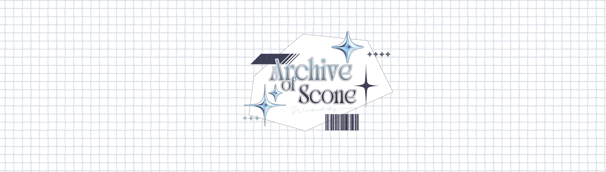

Archive of Scone

SELECTED CHARACTERS
Live2D illust List.라이브투디 일러스트
✳COPYRIGHT & USAGE
저작권 및 이용권한
COPYRIGHT & USAGE
저작권 및 이용권한
1. 저작권 및 이용 권한 Copyright & License
- 저작권 귀속: 본 작업물의 저작인격권 및 저작재산권을 포함한 모든 저작권은 작가 Scone에게 귀속됩니다.
Copyright, including moral and economic rights, remains with the artist, Scone.
- 이용 허락 범위: 구매자는 버튜버 활동을 위한 Live2D 리깅 적용, 유튜브·치지직·아프리카TV 등에서의 방송, SNS 프로필 및 홍보, 방송 썸네일 사용 권한을 가집니다.
The buyer may use the artwork for VTuber activities, including Live2D rigging, streaming on platforms such as YouTube, CHZZK, and AfreecaTV, social media profiles and promotion, and stream thumbnails.
- 방송 후원 및 방송 관련 수익 창출이 기본 이용 범위에 포함됩니다.
Streaming donations and other stream-related revenue are included in the standard license.
- 금지 사항: 사전 협의 없는 굿즈 제작 및 2차 상업 판매는 금지되며, 별도 상업용 라이선스 문의가 필요합니다.
Merchandise production and commercial resale are not allowed without prior agreement. Please inquire about a separate commercial license.
- AI 데이터셋 학습, 무단 재판매 및 제3자 양도는 금지됩니다.
Using the artwork to train AI datasets, reselling it without permission, or transferring it to a third party is prohibited.
- 작가의 승인 없이 디자인을 변형하거나 훼손할 수 없습니다.
The design may not be altered or damaged without the artist's approval.
2. 포트폴리오 공개 Portfolio
- 완성된 작업물은 작가의 X(Twitter) 및 포트폴리오 웹사이트 등에 공개되거나 홍보용으로 사용될 수 있습니다.
The finished work may be displayed on the artist's X (Twitter) account or portfolio website, or used for promotional purposes.
3. 상업적 2차 활용 Goods & Merchandise
- 아크릴 스탠드, 장패드, 의류 등 굿즈의 상업적 제작 및 판매에는 별도의 상업용 라이선스 계약이 필요합니다.
Commercial production and sale of merchandise such as acrylic stands, desk mats, and apparel require a separate commercial license.
- 굿즈 제작을 계획하고 계신 경우, 신청 시 미리 말씀해 주시면 추가 라이선스를 안내해 드립니다.
If you plan to make merchandise, please let me know when you apply so I can provide details about the additional license.
✳FILES & MODIFICATIONS
제공 파일 및 수정 범위
FILES & MODIFICATIONS
제공 파일 및 수정 범위
작업 제공 파일 및 리깅·수정 범위 Files & Modifications
- 제공 파일: Live2D 작업이 가능한 파츠 분할 완료 PSD 파일(300dpi 이상)을 제공합니다.
Files provided: A fully separated PSD file at 300 dpi or higher, ready for Live2D work.
- 리거 전달 허용: 리깅 작업을 위해 담당 리거에게 PSD 파일을 전달할 수 있으며, 리깅에 필요한 파츠 보완 등 세부 조정도 허용됩니다.
Sharing with your rigger: You may share the PSD with your rigger. Minor adjustments needed for rigging, such as refining parts, are also allowed.
- 수정 요청: 스케치·선화·채색 단계별 확정 후에는 이전 단계로 돌아가는 큰 폭의 수정이 어려울 수 있습니다.
Revision requests: Once the sketch, line art, or coloring stage has been approved, substantial revisions to an earlier stage may not be possible.
- 리깅 중 리거의 요청으로 파츠 추가 또는 수정이 필요한 경우, 리깅 단계에서 일정 기간 내에 문의해 주시면 협의 후 지원해 드립니다.
If your rigger requests additional or revised parts during rigging, contact me within the applicable period. I can provide support after discussion.